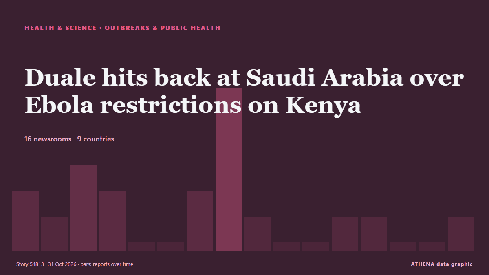

Duale hits back at Saudi Arabia over Ebola restrictions on Kenya

Health Cabinet Secretary Aden Duale has criticised Saudi Arabia’s decision to suspend travel by its citizens to Kenya and halt visa issuance to travellers from the country, terming the measures… من People Daily
نشرته بشكل مستقل 16 مصدرًا في 9 دول منذ 27 أكتوبر، وأول من نشره Xinhua (English) — page reader؛ والتغطية تتراجع. يقدّر ATHENA الخطر بأنه مرتفع (6.1/10)، ويعود ذلك أساسًا إلى خطورة الضرر الموصوف وجودة الأدلة. الثقة 90٪ (مرتفعة)، وعدد المصادر المستقلة المؤكِّدة: 16، بمتوسط موثوقية للمصادر يبلغ 73٪. وسائل الإعلام حسب البلد: كينيا (7), نيجيريا (3), غانا (2). التغطية: من 27 أكتوبر إلى 31 أكتوبر، 93 ساعة.
لماذا يهم: قد تغيّر التطورات الصحية والعلمية مخاطر الصحة العامة وأولويات البحث والتنظيم.
ما الذي تغيّر: 3 تقارير جديدة من 3 غرف أخبار خلال 24 ساعة حتى 31 أكتوبر.
العنوان الأول: Africa CDC Commits $1.5mn to Support Kenya’s Ebola Response
تُعرض العناوين بالإنجليزية كما نُشرت.
نظرة سريعة
اختير وقُيِّم وكُتب وفق منهجية ATHENA المنشورة. لا يتدخل أي محرر في الأحداث بعينها. كيف يُنتَج ›
| 27 Oct 16:44 UTC | 2 |
|---|---|
| 27 Oct 22:44 UTC | 1 |
| 28 Oct 04:44 UTC | 3 |
| 28 Oct 10:44 UTC | 2 |
| 28 Oct 16:44 UTC | 0 |
| 28 Oct 22:44 UTC | 0 |
| 29 Oct 04:44 UTC | 2 |
| 29 Oct 10:44 UTC | 6 |
| 29 Oct 16:44 UTC | 1 |
| 29 Oct 22:44 UTC | 0 |
| 30 Oct 04:44 UTC | 0 |
| 30 Oct 10:44 UTC | 1 |
| 30 Oct 16:44 UTC | 1 |
| 30 Oct 22:44 UTC | 0 |
| 31 Oct 04:44 UTC | 0 |
| 31 Oct 10:44 UTC | 1 |
| 29 Oct 13:02 UTC | 5.5 |
|---|---|
| 29 Oct 21:08 UTC | 6.6 |
| 31 Oct 14:14 UTC | 6.1 |
لماذا هذه الأرقام
الأهمية
الخطر
الثقة
التغطية — من نشر الخبر ومتى
العنوان كما نُشر · يفتح الأصل- Xinhua (English) — page reader · الصينTanzania strengthens Ebola preparedness at Kenya border
- The Standard · كينياKenya becomes regional abduction hub
- AllAfrica · AFRAfrica: Africa CDC Commends Kenya's Decisive Leadership and Strengthens Joint Efforts to Contain Ebola
- Capital FM Kenya · كينياAfrica CDC Commits $1.5mn to Support Kenya’s Ebola Response
- The Standard · كينياHow Kenya has become regional abductors' paradise
- The Guardian · المملكة المتحدةAfrica’s ‘unprecedented’ Ebola outbreak could reach UK, says top health official
- Daily News · تنزانياTanzania, Kenya agree to develop a framework for food radioanalysis certification
- People Daily · كينياMTRH says 10 suspected Ebola cases tested negative
- ECDC news · السويدFirst public health emergency preparedness assessments across Europe show both commitment and recurring challenges
- Graphic Online · غاناEbola threat: Government tightens all entry controls
- Channels TV · نيجيرياEbola: A’Ibom Health Commissioner Tasks DSNOs On Heightened Surveillance
- Capital FM · كينياAfrica urged to boost domestic funding for food security as climate risks mount
- MyJoyOnline · غاناAfrica CDC urges coordinated action as Ebola outbreak exceeds 10,000 cases
- Capital FM Kenya · كينياAfrica’s biodiversity goals face data, funding and capacity gaps, experts warn
- Anadolu Agency (English) · تركياAfrican officials agree to keep borders open despite Ebola outbreak
- SABC News · جنوب أفريقياAfrica CDC calls for stronger coordination amid Ebola spread
- Premium Times · نيجيرياEbola: Africa CDC warns continent ‘not winning’ as cases surpass 10,000
- AllAfrica · AFRKenya: No, Kenya's Health Minister Did Not Announce an Impending Ebola Lockdown
- Vanguard · نيجيرياEbola outbreak not under control in Africa, CDC warns
- People Daily · كينياDuale hits back at Saudi Arabia over Ebola restrictions on Kenya